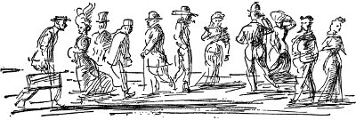
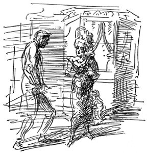
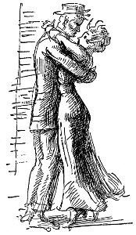
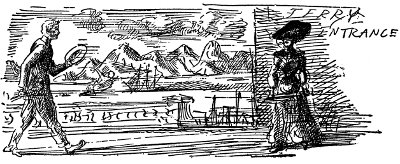
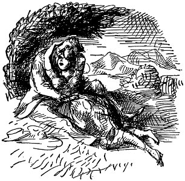
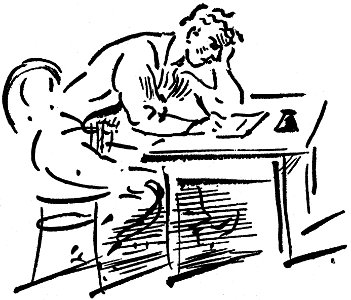
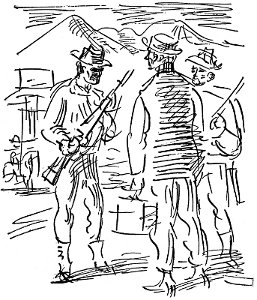
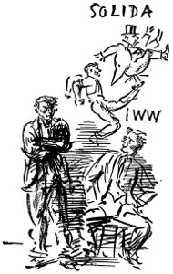
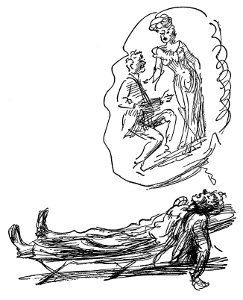

bu milyarların ve beyinlerin yöneteceği bir
yüzyıldır dedi
minneapolıs'te doğan bebek buraya kuvözde
geldi
Cheyenne Cheyenne
Atla midillimin arkasına
jım hıll petrol tröstlerine 939 maddeden
saldırdı dedi
dört büyük tren paramparça oldu
kadın ve çocuklar yok edildi dayak yiyenleri hatta sakat kalanları gördüğünü ama hiçbir korkunç saldırı olmadığını onayladı
bağımsız kongo devleti konusundaki gerçek
koca zırhlıda çok büyük suç buldu Santos Dumont avcı kuşun öcünü alacağından söz ediyor Kongo yerlilerinin baş amacı karı bulmak ABD denizaltılarının uzaklaşmasını emreden olağandışı mektup
kongo'daki beyazlar ahlak duygusunu yitirdi
cankurtaran rekabetinde kadın kaçırıldı
thaw tarihsel savaşımı yüzünden yargılanıyor
işçilerin politikaya karışmaları tehlikesi
New York'ta görülen Salome'nin sonu annenin kahramanlığı işe yaramadı
İki kişilik yer var canım
Ama törenden sonra
İki, canım, tıpkı bir can gibi, canım midillimde dönecek
Bizim eski Cheyenne'den
Sine-göz (8)
yatağında oturmuş pabucunun bağını çözüyordun Hey Frenchie diye bağırdı Taylor kapıdan Kid'le dövüşmen gerekiyor istemiyorum onnan dövüşmeyi dövüşmelisin dövüşmesi gerekiyor diil mi çocuklar? Freddie kapı aralığından kafasını uzatıp nanik yaptı hadi dövüş bakalım üst kattaki tüm çocuklar da ordaydı ana kuzusu değilsen ve üzerimde pijamalarım vardı Kid'i itelediler içeri Kid Frenchie'ye vurdu Frenchie Kid'e vurdu ağzında kan tadı vardı herkes bağırdı Hakla şunu Kid bir tek Gummer'dan başka o bağırdı Çenesini dağıt Jack Frenchie Kid'i yatağın üzerine yatırdı hepsi çekiştirdiler onu hepsi Frenchie'yi kapıya dayadılar vuruyordu boyuna bir sağdan bir soldan kimin vurduğunu göremiyordu Taylor'la Freddie kollarını tuttu Kid'e gelip vurmasını söylediler ama Kid vurmadı Kid ağlıyordu
ağzında kanlı hoş kusmuklu tat sonra ışıkların sönme zili çaldı herkes odasına koştu başın zonklayarak yatağına yattın ağlıyordun Gummer parmaklarının ucuna basarak geldiğinde Benzettin onu Jack dediğinde Freddie'nin o aralık ona vurması rezaletti bokluktu ama Hoppy koridorda parmak ucunda dolaşıyordu odasına dönmeye çalışan Gummer'ı yakaladı o da ağzının payını aldı
Mac
Şükran günü sıralarında Mac Sacramento'ya varmış kuruyemiş mağazasında kabuk kırma işi bulmuştu. Yeni yılın ilk gününde kendine koyu renk yeni bir takım, buharlı gemiyle ırmakta San Francisco'ya kadar bilet alacak parayı biriktirmişti.
Vardığında hemen hemen akşamın sekiziydi. Elinde bavuluyla doktan Market Caddesi'ne yürüdü. Caddeler ışıl ışıldı. Parlak renkli giysiler içindeki delikanlılar, güzel kızlar, eteklerini, atkılarını uçuran, yanaklarına renk katan, kum, kâğıt parçalarını havaya savuran, sert, sürükleyici rüzgârın içinden hızla geçiyorlardı. Çinliler, Portekizliler, Japonlar vardı sokakta. Herkes eğlence yerlerine, lokantalara doluşuyordu. Barların kapısından müzik sesi, lokantalardan kızaran yağlı yiyecek, şarap, bira kokuları geliyordu. Mac bir eğlenceye gitmek istiyordu, ama yalnızca dört doları vardı, bu yüzden de YMCA'ya gidip oda tuttu, alt kattaki bomboş yemek salonunda nemli börekle kahve içti.

Hastane odası gibi çıplak bir odada uyanınca pencereyi açtı, ama bu içeriyi aydınlatmaktan başka işe yaramadı. Oda, bir çeşit temizleme suyu kokuyordu, yatağa uzanınca, battaniyeden formaldehit kokusu geldi. Çok iyiydi. Kaynayan kanının tüm bedeninde akışını hissedebiliyordu. Biriyle konuşmak, dans etmek, tanıdığı biriyle içki içmek, bir kızı bir yerlere götürmek istiyordu canı. Seattle'da o kızların odasındaki dudak boyası ve mis gibi pudra kokusunu duydu yine. Kalkıp bacaklarını sallayarak yatağının kıyısında oturdu. Sonra dışarı çıkmaya karar verdi, ama gitmeden önce, parasını bavuluna koyup kilitledi. Yorgunluktan bitkin düşünceye kadar yapayalnız sokaklarda dolaştı, sağına soluna bakınmadan, sokak köşelerindeki boyalı kızların, eline adres sıkıştırmaya çalışan kadın satıcılarının, kavga çıkarmaya kalkışan sarhoşların, bir şeyler koparmaya uğraşan dilencilerin önünden rüzgâr gibi geçerek hızla yürüdü. Sonra da içi burkularak, üşümüş, yorgun, odasına dönüp kendini yatağa attı.
Ertesi gün dışarı çıkıp kocaman bıyıkları, dalgalanan kara bir boyunbağı olan, Bonello adında, dazlak İtalya'nın sahip olduğu ve yönettiği küçük matbaada iş buldu. Bonello ona, bir zamanlar Garibaldi yandaşı bir kızıl, şimdiyse anarşist olduğunu söyledi. Onun büyük kahramanı Ferrer'di, kendi düşüncelerine döndürebileceğine inandığı için Mac'a iş verdi. Bütün kış Mac, Bonello'da çalıştı, makarna yedi, kırmızı şarap içti, onunla, arkadaşlarıyla akşamları devrimden konuştu, pazar günleri sosyalistlerin düzenledikleri kır gezilerine ya da özgürlükçülerin toplantılarına gitti. Cumartesi geceleri YMCA'da tanıdığı Miller adında delikanlıyla genelevleri dolaştı. Miller dişçi olacaktı. Emporium'da, kadın şapkaları bölümünde çalışan Maisie Spencer adında bir kızla arkadaşlık kurdu. Kız, pazar günleri onu kiliseye götürmeye çalışıyordu. Mac, devrimi anlattığı zaman inanmazca üzerine çevirdiği kocaman mavi gözleri olan sessiz sedasız bir kızcağızdı. Küçük inci gibi dişleri vardı, güzel giyinirdi. Bir süre sonra artık onu kilise konusunda tedirgin etmez oldu. Mac'ın kendisini Predisco'da çalan bandoyu dinlemeye, Sutro Park'taki heykellere bakmaya götürmesinden hoşlanıyordu.

Deprem olduğu sabah kendi müthiş korkusunu yendiğinde Mac'ın ilk düşündüğü şey Maisie'ydi. Oraya vardığında ailesiyle birlikte oturduğu evin bulunduğu Mariposa Caddesi olduğu gibi duruyordu, ama ortalıkta kimseler yoktu. Yangın söndürme birliğinde, dumanlar arasında, keresteleri yere indirip dinamitleyerek geçirdiği üç günün sonunda Golden Gate Parkı'nın girişindeki yiyecek kuyruğunda buldu onu. Spencer'lar, yerle bir olmuş limonlukların yanında, çadırda kalıyorlardı.
Kız onu tanıyamadı, çünkü saçları, kaşları yanmış, giysileri parçalanmış, tepeden tırnağa ise bulanmıştı. Mac onu daha önce hiç öpmemişti, ama herkesin önünde kucaklayıp öptü. Bıraktığı zaman kızın yüzü de kendininkinden islenmişti. Kuyruktakilerden bazıları alkışlayıp güldü, ama tam arkalarındaki, pompadur topuzu çarpılmış, içinden topuz yastığı görülen, iki ipekli kapitone sabahlığı üst üste giymiş yaşlı kadın hınçla, “Şimdi git de yüzünü yıka bakalım,” diye söylendi.

Bundan sonra kendilerini nişanlı saydılar, ama Bonello'nun matbaası da çevredeki tüm yapılarla birlikte yerle bir olduğu, Mac işsiz kaldığı için evlenemediler. Maisie, eve geri götürürken karanlık kapı aralıklarında öpmesine, mıncıklamasına izin veriyordu, ama daha ileri gitmeye çalışmaktan Mac da vazgeçmişti.
Sonbaharda Bulletin'de iş buldu. Gece işinde çalışıyordu, pazar günleri dışında Maisie'yi hemen hemen hiç görmüyordu, ama yılbaşından sonra evlenmekten söz etmeye başlamışlardı. Uzakta olduğu zamanlar Maisie'ye kızıyordu ya birlikte olduklarında hemen yumuşayıveriyordu. Ona, sosyalizm üzerine kitapçıklar okutmaya çalıştı, oysa kız gülüyor, kocaman, içtenlikli gözleriyle yüzüne bakıp bu konunun kendisi için çok derin olduğunu söylüyordu. Tiyatroya gitmekten, masa örtülerinin kolalı, garsonların takım elbiseli olduğu lokantalarda yemek yemekten hoşlanıyordu.
O sıralar, bir gece Chicago mezbahalarından söz edecek olan Upton Sinclair'ı dinlemeye gitti. Yanında, işçi tulumlu bir genç oturuyordu. Gaga burnu, gri gözleri, elmacıkkemiklerinin altında derin kırışıkları vardı, ağır ağır konuşuyordu. Adı Fred Hoft'tu. Toplantıdan sonra birlikte gidip bira içtiler, konuştular. Fred Hoff, Dünya Sanayi İşçileri adlı, yeni bir devrimci örgüte üyeydi. İkinci bardak biralarını içerlerken Mac'a örgütün başlangıç ilkelerini okudu. Bir şilepte donki makinisti olarak çalışıyordu ve kente daha yeni gelmişti. Denizlerdeki sersefil pisliklerden, zorluklardan bıkmıştı. Aylığı hâlâ cebindeydi, çarçur etmeye de hiç niyeti yoktu. Goldfield'de madencilerin greve gittiklerini duymuştu, oralara uzanıp bir şeyler yapmak istiyordu. Onunla konuşurken Mac, işçi sınıfına karşı olan yalanların basılmasına yardım ettiği için pis bir hayat sürdürdüğünü düşündü. “Hey Tanrım, sen tam bizim oralarda gerek duyduğumuz adamsın. Goldfield'de, Nevada'da gazete çıkaracağız.”
O gece Mac sendikaya gidip kartını doldurdu, başı dönerek evinin yolunu tuttu. Hani neredeyse kendimi orospu çocuklarına satıyordum, diyordu kendi kendine.
Ertesi pazar Maisie'yle birlikte telli-trenle Tamalpais Dağı'nın tepesine çıkmayı kararlaştırmışlardı. Çalar saatle uyandığında Mac'ın korkunç uykusu vardı. O akşam yine işinin başında olabilmesi için erkenden yola çıkmaları gerekiyordu. Saat dokuzda buluşacakları arabalı vapur iskelesine giderken preslerin takırtısı, mürekkepten, preslerin altındaki lekeli kâğıtlardan yükselen ekşi koku, hepsinden de baskını birkaç arkadaşıyla gittiği o evin koridorlarındaki koku, küflü odaların, bulaşık taslarının, koltukaltlarının kokusu, yapış yapış bir yatakta seviştiği kıvırcık saçlı kızın süslenme masası, içtikleri bayat biranın tadı, “İyi geceler, canım, yine gel,” diyen cilveli mekanik ses kafasının içindeydi.
Kendi kendine, “Tanrım, ben alçağın tekiyim,” dedi.
Pırıl pırıl bir sabahta, sokaktaki tüm renkler cam parçacıkları gibi parıldıyordu. Piç gibi ortalıkta dolaşmaktan bıkmıştı. Maisie kafadar biri, arkadaş gibi konuşabileceği, başkaldırmış biri olsaydı ne olurdu sanki, işini bırakacağını nasıl söyleyecekti ona?

Arabalı vapurda bekliyordu kız, tertemiz denizci mavisi giysisi, geniş kenarlı şapkasıyla mankenlere benziyordu. Vapura koşmaları gerektiğinden konuşacak zaman bulamadılar. Bindiklerinde öpsün diye kız yüzünü kaldırdı. Dudakları soğuktu, eldivenli eli kendininkinin üzerinde tüy gibi hafif duruyordu. Sausalito'da troleybüse bindiler, araba değiştirdiler, telli-trende iyi yerlere oturabilmek için koşarlarken gülümseyip durdu kız, sonra yapayalnız buldular kendilerini esmer dağın uğuldayan uçsuz bucaksızlığında, masmavi gökte, denizde. Daha önceleri birlikte hiç böyle mutlu olmamışlardı. Tepeye kadar Maisie onun önünden koştu. Gözlem kulesine vardıklarında soluksuz kalmışlardı. Ötekilerin göremeyeceği bir yerde, bir duvarın arkasında durdular, kız izin verdi yüzünü öpmesine, tüm yüzünü, boynunu.
Sis parçaları, önlerindeki koyun, ovaların, gölgeli dağların görünümünü yol yol keserek savruluyordu. Deniz yönüne döndüklerinde, buz gibi rüzgâr her şeyin üzerinde acı acı uğulduyordu. Salınan sis yığını, gelgit dalgası gibi deniz yönünden toplanıyordu. Kız koluna sarıldı. “Ah, bu beni korkutuyor, Fainy!” Sonra ansızın ona işinden çıktığını söyledi. Maisie, başını kaldırıp baktı, korku içinde, soğuk rüzgârdan titreyerek, küçücük, çaresiz. Burnunun iki yanından yaşlar akmaya başladı. “Oysa beni sevdiğini sanmıştım, Fenian . . . Benim için çok mu kolay sanıyorsun boyuna seni beklemek, istemek, seni sevmek? Ah, beni sevdiğini sanmıştım.”
Mac, kolunu doladı onun beline. Hiçbir şey söyleyemiyordu. Yerçekimiyle giden trene doğru yürümeye başladılar.
“Bütün o insanların ağladığımı görmelerini istemiyorum. Önceleri nasıl da mutluyduk. Muir Ormanı'na doğru yürüyelim.”
“Epeyce uzak orası Maisie.”
“Bana ne, gitmek istiyorum.”
“Vay canına, iyi sporcusun, Maisie.”
Dar yoldan inmeye başladılar, sis her yanı örttü.
Bir iki saat sonra dinlenmek için durdular. Yoldan ayrıldılar, koca bir ladin ağaçları kümesinin ortasında küçük bir çimenlik buldular. Her yanlarını sis sarmıştı, ama yukarılarda gökyüzü pırıl pırıldı, sisin içinden güneşin sıcaklığını duyabiliyorlardı. “Ah sivilcelerim çıkmış,” diyerek kız yüzünü gülünç biçimde buruşturdu, Mac kahkaha attı. “Hiç de korktuğun gibi olmayacak,” dedi. “İnan bana Maisie.” Maisie'ye grevi, devrimcileri, niçin Goldfield'e gittiğini açıklamak istedi, ama yapamadı. Tüm yapabildiği onu öpmek oldu. Kızın ağzı dudaklarına kenetlendi, kollarıyla sımsıkı sarmıştı Mac'ı.
“Namussuzum hiç fark etmeyecek evlenmemiz, namussuzum etmeyecek . . . Maisie, senin için çıldırıyorum . . . Maisie, yalvarırım benim ol . . . Namussuzum bilemezsin nasıl korkunç seni böylesine severken benim olmaman.”

Mac ayağa kalkıp kızın giysisini aşağı çekerek düzeltti. Kız gözleri kapalı, yüzü bembeyaz uzanıyordu orada. Bayılmış olmasından korktu. Eğilip usulca yanağından öptü. Kız belli belirsiz gülümsedi, başını kendine çekip saçlarını karıştırdı. “Küçük kocam,” dedi. Bir süre sonra ayağa kalktılar, hiçbir yeri görmeksizin büyük servi ağaçlarından koruyu geçip troleybüs durağına geldiler. Arabalı vapurda evlerine dönerken hafta içinde evlenmeyi kararlaştırdılar. Mac, Nevada'ya gitmeyeceğine söz verdi.
Ertesi sabah uyandığında içi sıkılıyordu. Kendini satmak üzereydi. Banyoda tıraş olurken aynada kendine baktı, yüksek sesle, “Seni pezevenk, kendini orospu çocuklarına satıyorsun,” dedi.

Odasına dönüp Maisie'ye mektup yazdı.
sevgili maısıe
Şerefsizim, bir an için bile olsa seni sevmediğimi düşünme sakın, ama gidip o gazetenin çıkarılmasına yardım edeceğime dair çocuklara söz verdim ve sözümü tutmalıyım. Oraya varır varmaz sana adresimi göndereceğim, herhangi bir şey için bana gerek duyarsan hemen döneceğim, şerefsizim döneceğim.
Bir yığın öpücük, sevgiler
Fainy
Bulletin ofisine gidip aylığını çekti, bavulunu topladı, Goldfield, Nevada'ya ne zaman tren bulabileceğini öğrenmek için istasyona yöneldi.
Sine-göz (9)
gün boyu gübre fabrikaları berbat kokuyordu geceleri içerisi öfkeyle tüm kanını bitiren sivrisineklerle doluyordu ama orası Doğu Kıyısı'nda Crisfield'di benzinle işleyen motorumuz olsaydı koyun karşı kıyısına taşırdık domateslerimizi mısırımızı turfanda şeftalilerimizi oradan da doğru New York'a yollardık gemiynen Baltimore'daki komisyoncu tüccarlar tarafından dolandırılmak yerine bostanımız olurdu turfanda sebze yüklerdik gemilere Northern Neck'in tütün ekilmekten bitmiş tükenmiş topraklarını işlerdik gübrelerdik zenginleştirirdik benzinle işleyen motorumuz olsaydı kışın istiridye taşırdık pazar için su kaplumbağası yetiştirirdik
ama yük katarının üstünde bir delikanlıyla konuşuyordum benim yaşlarımda vagonlardan birinde uyuyordu tam da güneşin ortasında uyuyordu mısır yapraklarının kokusuyla gübre fabrikalarından yükselen çürümüş ringa balığı buğusunun ortasında uyuyordu kıvırcık saçları içinde saman sapları vardı açık gömleğinden göğsünün beline kadar yanmış olduğunu görüyordun sanırım pek bi işe yaradığı yoktu ama taa Minnesota'dan buralara sürtmüştü güneye gidiyordu ona Chespeake Koyu'ndan söz ettiğimde pek de şaşırmadı ama dedi ki Sanırım yüzmek için pistir ben ringa balığı taşıyan gemilerde bi iş bulucam
Koca Bill
Koca Bill Haywood, altmış dokuzda Salt Lake City'de bir pansiyonda doğdu.
Utah'da büyüdü, Ophir'de okula gitti, maden parçalarına ateş edilen, cumartesi akşamları kâğıt oynanan, yeni gümüş dolarla tepeleme dolu poker masalarının üzerine viski saçılan bir madenci kampıydı orası.
On bir yaşına girdiğinde annesi onu bir çiftçinin yanına verdi. Çiftçi kendisini kırbaçladığı için kaçtı. Bu onun ilk greviydi.
Kayın ağacından sapan yontarken gözünün birini yitirdi.
Bakkallarda çalıştı, meyve sattı. Salt Lake Tiyatrosu'nda yer gösterdi, haber götürüp getirdi, Continental Otel'de komilik yaptı.
On beş yaşına geldiğinde
Nevada'da Humboldt ilçesinde maden ocaklarına gitti.
Tüm malvarlığı, işçi tulumu, bir ceket, mavi bir gömlek, madenci çizmeleri, iki çift battaniye, bir dizi satranç taşı, boks eldivenleri, annesinin hazırladığı erikli tatlıdan bir öğlen yemeğiydi.
Evlendiği zaman, eski günlerde Kızılderililere karşı kurulan ama artık asker kalmadığı için herkesin bırakıp göçtüğü McDermit Kalesi'ne gitti:
orada karısı doktorsuz, ebesiz ilk çocuğunu doğurdu. Bill kesti göbeğini. Bill doğum artıklarını gömdü;
çocuk yaşadı. Bill ölçüm işleri yaparak, Paradise Ovası'nda kuru otları biçerek, atları doğurtarak, bu uçsuz bucaksız çiftçiler ülkesinde at koşturarak para kazandı.
Bir gece Thompson'un Değirmeni'nde rastlantı sonucu buluşan, bu bırakılmış çiftlikte geceyi geçiren beş adamdan biriydi. Her biri tek gözünü yitirmişti, bölgede tek gözlü başka adam yoktu.
Çiftliklerini, evlerini yitirdiler, her şey dağıldı, karısı hastaydı, bakması gereken çocukları vardı. Silver City'de madencilik yapmaya gitti.
Idaho Eyaleti'ne bağlı Silver City'de Batı Madenciler Federasyonu'na katıldı, orada ilk sendikacılık görevini üstlendi. ‘98'de Salt Lake City'de yapılan B.M.F. konferansında Silver City madencilerinin delegesi oldu.
O günden sonra da hep örgütleyici konuşmacı, öğüt vericiydi, tüm madencilerin dilekleri onun da dilekleriydi; Coeur D'Alenes'le, Telluride'le, Topal Creek'le savaştı.
Sosyalist Parti'ye katıldı, tüm Idaho'da, Utah'ta, Nevada'da, Montana'da, Colorado'da, sekiz saatlik işgünü için, daha iyi yaşama koşulları için, dağlardan kazıp çıkardıkları zenginliklerden pay almak için greve giden madencilerle konuşmalar yaptı, yazılar yazdı.
1905 yılı ocak ayında, Chicago'da, yirmi yıl önce Chicago anarşistlerinin toplantı yapmış oldukları Lake Caddesi'ndeki salonda, bir toplantı düzenlendi.
William D. Haywood sürekli başkandı. İşte bu toplantıda daha sonra Dünya Sanayi İşçileri'ni ortaya çıkaracak olan bildiri yazıldı.
Denver'e döndüğünde kaçırılıp Idaho'ya götürüldü, evinde bombayla havaya uçurulan eski Idaho valisi, koyun yetiştirici Steunenberg'i öldürmek suçundan Moyer ve Pettibone'la birlikte yargılandı.
Boise'de suçsuz bulundukları zaman (avukatları Darrow'du) Koca Bill Haywood'un işçi sınıfı önderi olarak ünü tüm ülkeye yayılmıştı.
Şimdi tüm işçilerin dilekleri onun dilekleriydi, Batılı, sığır çobanlarının, oduncuların, çiftçilerin, madencilerin sözcüsüydü.
(Buharlı matkap binlerce madencinin işinden olmasına yol açmıştı; buharlı matkap Batı'daki tüm madencilerin yüreklerine korku saçmıştı.)
Batı Madenciler Federasyonu tutucu olmaya başlamıştı. Haywood Dünya Sanayi İşçileri'yle “eskisinin kabuğu içinde yeni bir toplum kurmak için” çalışmaya başladı. 1908'de Debs'in Başkanlık Kampanyası'na katıldı özel Kızıl Vagon'da. Doğu'da, devrimci ruhun yeşerdiği tüm büyük grevlerde o vardı, Lawrence'ta, Paterson'da, Minnesota'da demir işçilerinin grevlerinde hazırdı.
Batı Madenciler Federasyonu, Banker Morgan'ın alacaklarını kurtarmak için, Wilson demokrasisini kurtarmak için, Amerikan İşçi Federasyonu'yla işbirliğine gitti; Napoléon'un mezarı başında durup imparatorluk hayallerine daldılar, Ritz'in barında şampanyalı kokteyller içtiler, Montmartre'da Rus kontesleriyle yattılar, imparatorluk hayallerine daldılar, ülkenin her yanındaki ordu merkezlerinde, işadamlarının düzenledikleri yemeklerde para ediyordu kartalı bağırtmak;
savaşa karşı çıkanları, Almanya'nın yandaşlarını, Dünya Sanayi İşçileri üyelerini, Kızılları, Bolşevikleri linç ettiler.
Bill Haywood Chicago'da yüz bir kişiyle birlikte yargılandı. Beyzbol takımı sahibi Yargıç Landis
trafik cezası keserken gösterilenden daha az özenle
veriverdi yirmi yıl hapis, otuz bin dolar para cezasını.
Lavenworth'ta iki yıl kaldıktan sonra Koca Bill'i kefaletle bıraktılar (elli yaşındaydı, iriyarı, yıpranmış bir adamdı), savaş bitmişti, ama Amerikalılar Versailles Sarayı'nın Aynalı Koridoru'nda imparatorluk yönetmeyi öğrenmişlerdi;
mahkeme yeni bir duruşmaya karşı çıktı.
Haywood'a kalmıştı ya kefalet parasını bırakıp kaçmak ya da yirmi yıl içeri girmek
Şeker hastasıydı, çok güç koşullarda yaşamıştı, tutukluluk sağlığını bozmuştu. Rusya işçi cumhuriyetiydi, Rusya'ya gitti, birkaç yıl Moskova'da kaldı, ama mutlu değildi orada, çok garip geliyordu bu dünya ona. Orada öldü, iriyarı yıpranmış bedenini yaktılar, küllerini gömdüler Kremlin duvarının dibine.
Sine-göz (10)
Senato ve Temsilciler Meclisi toplantıdayken beni Meclis Binası'na götüren eski binbaşı Konfedere Ordu'nun iaşe memuruydu çok incelikli tavırları vardı bu yüzden de maiyet memurları eski binbaşının önünde eğilirlerdi küçük uşak oğlanlar dışında senin erkek kardeşin kadar ya var ya yoktular bir zamanlar senin kardeşin de Senato'da uşaktı ve arada Senatörün ya da milletvekilinin biri kısık gözleriyle bakardı binbaşıya belki de önemli biri diye önünde eğilir içtenlikle tokalaşır ya da elini kaldırırdı
eski binbaşı çok güzel giyinirdi uzun arkası yırtmaçlı ceketi vardı etli yanaklarında koca bıyığı ağır ağır yürürdük Botanik Bahçelerinde donuk güneş ışığında ağaçların fundaların üzerindeki etiketlere bakardık şişko ardıçkuşlarının sığırcıkların çimenlerde zıplamasına bakardık merdivenleri çıkardık boy boy ölü heykellerle kubbeli yapının donuk havasından geçerdik Senato Salonu donuk kırmızı toplantı odası Temsilciler Salonu donuk yeşil toplantı odaları ve Yüksek Mahkeme Salonu unutmuşum ne renkti Yüksek Mahkeme Salonu
konuk salonunun kapısının arkasından fısıldayarak ölü hava tepe camlarının altında takırdayan bir ses çarpılan sıralar ölü hava dolu uzun koridorlar ne de çok yorulurdu bacaklarımız ben düşünürdüm çimenlerdeki ardıçkuşlarını ölü hava dolu uzun sokakları bacaklarım yorgundu gözlerimin arasında sancı vardı eğilen yaşlı adamlar çabucak kısık gözlerle
belki de önemli biri kocaman kısılmış kaba ağızlar tozlu kara fötr giysi dolaplarının kokusu ölü hava ben merak ederdim eski binbaşının ne düşündüğünü benim ne düşündüğümü belki de Corcoran Sanat Galerisi'ndeki o koca resmi Galeri sütunlarla merdivenlerle fesatçılarla dolu morlar giymiş uzanıp yatıvermiş Sezar resmin adı Ölü Sezar'dı.
Mac
Mac, Goldfield'de trenden iner inmez haki gömlekli, haki pantolonlu, yelken bezinden asker tozlukları takmış, sırık gibi bir adam yanına yaklaştı. “Kusura bakmazsan sorucam, bu kentte ne işin var, dostum?”
“Gezici kitap satıcısıyım.”
“Ne tür kitaplar?”
“Chicago'daki Gerçek Arayıcı Şirket adına okul kitapları falan.”
Mac bunları büyük bir hızla homurdanmıştı, adam etkilenmiş görünüyordu.

“Sanırım senden zarar gelmez,” dedi. “Kartal Oteli'ne mi gideceksin?” Mac başını salladı. “Plug götürür seni, bizim takımda çalışan adam . . . Görüyorsun ya şu baş belası kışkırtıcıları arıyoruz, su Çalışmak Yok diyen herifleri.”
Altın Kartal Oteli'nin önünde, şapkalarını gözlerinin üzerine çekmiş, sert görünüşlü iki asker nöbet tutuyordu. Mac içeri girdiğinde bardakilerin hepsi dönüp baktı. Elinden geldiğince suratını asarak, “İyi akşamlar, beyler,” diye söylenip oda istemek için mal sahibine doğru yürüdü. Bu süre içinde de Nevada İşçileri'nin merkezini kime sormayı göze alacağını düşünüp duruyordu.
“Sanırım sana bir yatak verebileceğim. Gezici satıcı mısın?”
“Evet,” dedi Mac. “Kitap satıcısı.”
Uzakta, bıyıkları kulaklarına uzamış iriyarı bir adam barda durmuş, sarhoş, yakınan sesiyle hızlı hızlı konuşuyordu, “Şu işi bi bana bıraksalar hemen sürüverirdim bu namussuzları burdan. Yığınla kahrolasıca avukat karışıyor bu işe. Defediverin orospu çocuklarını burdan. Direnirlerse vuruverin, valiye de böyle dedim, ama hep şu orospu çocuğu avukatlar karıştırıyor her haltı, yok teminatlarla yok ihzar emirleriyle yok bitmez tükenmez deli saçmalarıyla. Kıçıma anlatsınlar ihzar emirlerini.”
Mal sahibi yatıştırıcı bir sesle, “Tamam, tamam, Joe söylersin onlara,” dedi.
Mac bir puro alıp usulca dışarı savuştu. Kapı arkasından kapanırken iriyarı adam bağırıyordu yine. “Kıçıma anlatsınlar dedim ihzar emirlerini.”
Hava kararmak üzereydi. Yıkık dökük, tahta perdelerle bölünmüş sokaklarda buz gibi rüzgâr esiyordu. Tekerleklerin açtığı derin çamurlu çukurlarda sendeleyerek, karanlık camlarına baka baka birkaç sokak dolaştı Mac. Tüm kenti gezdi, ama gazete idarehanesine rastlamadı. Köşe başındaki Çin lokantasının önünden üçüncü kez geçmekte olduğunu anlayınca adımlarını yavaşlattı, kararsızlık içinde kaldırımda durdu. Sokağın sonunda bir tepenin koskoca, çentik çentik kütlesi kentin üzerinde asılı duruyordu. Sokağın karşı yanında, kafasını, kulaklarını paltosunun yakasıyla gizlemiş delikanlı bir hırdavatçı dükkânının karanlık vitrini önünde dolanıyordu. Mac onun güvenilir biri olduğuna karar verip konuşmak için yanına gitti.
“Şey, ahbap. Nevada İşçileri'nin ofisi nerde?”
“Ne halt etmeye öğrenmek istiyorsun?”
Birbirlerine baktılar. “Fred Hoff'u görmek istiyorum . . . Gazte işinde ona yardım etmek için San Francisco'dan geldim.”
“Kırmızı kartın var mı?”
Mac Dünya Sanayi İşçileri üyelik kartını çıkardı. “Görmek istersen sendika kartım da var.”
“Vay canına, yok yok . . . Galiba doğrusun, ama dedikleri gibi ya ben dedektifin biri olsaydım şimdi sen belanı bulmaz, içeri tıkılmaz mıydın?”
“Şu kahrolasıca kente gireyim diye onlara boktan bi kitap satıcısı olduğumu söyledim. Burjuva gibi görünmek için de bir çeyrektir puro içip duruyorum.”
Öteki güldü. “Peki işçi dostum. Seni götüreceğim.”
İki büyük, tıkış tıkış gecekondu mahallesinin arasındaki dar sokakta adamı izlerken, “Burada sıkıyönetim mi var?” diye sordu.
“Nevada Eyaleti'ndeki tüm grev kırıcı çığırtkanlar burda . . . adamın dediği gibi kıçına bi süngü yiyip burdan atılmazsan şanslısın.”
Sokağın sonunda pencereleri ışık içinde, ayakkabı kutusu gibi küçücük bir ev vardı. Madenci giysileri, tulumlar içinde gençler sokağı doldurmuşlar, üçer üçer kırık dökük merdivenlere oturmuşlardı.
“Neresi burası böyle, bilardo salonu mu?” diye sordu Mac.
“Burası Nevada İşçileri . . . Şey, benim adım Ben Evans, seni bizimkilerle tanıştırayım . . . Hey çocuklar, bu işçi dostumuz McCreary . . . Matbaa kurmak için San Francisco'dan geldi.”
İsveçli bir oduncuya benzeyen iriyarı adam, “Ver elini Mac,” diyerek kemiklerini çatırdatırcasına elini sıktı.
Fred Hoff, yeşil siperlik takmış, üzerinde matbaa harfleri dolu teknenin durduğu masanın arkasında oturuyordu. Ayağa kalkıp elini sıktı. “Vay dostum, tam zamanında geldin. Yapılacak dünya kadar iş var. Matbaacıyı içeri tıktılar, şu sayfayı basmamız gerekiyor.”
Mac paltosunu çıkarıp gitti, prese baktı. Eğilmiş dizgi makinesinin tuşlarını incelerken Fred Hoff geri dönüp onu bir köşeye çekti.
“Şey Mac, sana burda olup bitenleri açıklamak istiyorum . . . oldukça garip bi durum . . . Batı Madenciler Federasyonu namussuzluk yapıyor. Bir patırtıdır gidiyor. Geçen gün Saint burdaydı, şu Mullany olacak alçak herif onu iki kolundan birden vurdu, şimdi hastanede . . . Devrimci dayanışma düşüncelerinin tohumlarını attığımız için bize fena halde bozuluyorlar, anlarsın ya? Biz lokanta işçilerini, bazı inatçı madencileri de greve götürdük. Şimdi A. F. İşçileri de sözde kafalarını kullanıyorlar, et kafalı bi grev kırıcı örgütçüye, Montezuma Kulüp'te maden sahipleriyle al takke ver külah düşüp kalkma görevini yüklediler.”
“Hey, bi dakka, yavaş yavaş anlat da anlayalım,” dedi Mac.
“Geçen gün de sokağın sonundaki aşevinin önünde yine silahlar patladı, dükkân sahibi sersem vuruldu, bu yüzden birkaç çocuk içerde şimdi.”
“Berbat şeyler anlatıyorsun.”
“Önümüzdeki hafta Koca Bill Haywood konuşmaya geliyor . . . İşte vaziyetler böyle Mac. Bi makale döktürmeliyim . . . Sen matbaacı başısın, hepimiz gibi on yedi buçuk alacaksın. Hiç kendin bi şey yazdın mı?”
“Yok.”
“İşte böyle zamanlarda insan okulda daha çok çalışmadığına yazıklanıyor. Canına yandığım, keşke doğru dürüst yazabilsem.”
“Elime bi fırsat geçse ben iyi yazarım.”
“Koca Bill bizim için bir şeyler yazacak. Harika yazar.”
Matbaanın arkasında Mac için taşınabilir yatak yaptılar. Kartal'a gidip bavulunu alacak zamanı bulana dek bir hafta geçti. Büro ve matbaa olarak kullanılan yapıda, içinde soba kurulmuş, çocukların çoğunun yattığı uzun bir tavan arası vardı. Battaniyesi olanlar battaniyelerine sarınıp, olmayanlar başlarının altına ceketlerini sıkıştırıp, ceketleri de olmayanlar ellerinden geldiğince rahat etmeye çalışarak uyuyorlardı. Odanın sonunda, üzerine birinin gölgeli büyük harflerle Başlangıç İlkeleri'ni bastığı uzun bir kâğıt vardı. Büronun sıvalı duvarına biri karikatür yapmıştı. “Dünya Sanayi İşçileri” yazısını taşıyan işçi, silindir şapkasının üzerinde maden sahibi yazılı şişko adamın kıçına tekme atıyordu. Bunun üzerine de “dayanışma” yazmaya başlamışlar ama DAYAN'da kalmışlardı.

SOLIDA: Dayanışma anlamına gelen “solidarity” sözcüğünün kısaltılmış hali.
Bir kasım gecesi Koca Bill Haywood Madenciler Sendikası'nda konuşma yaptı. Mac'la Fred, konuşmayı gazete adına izlemeye gittiler. Rüzgârın acı acı uğuldadığı, savrulan karla kaplı koskoca ovada, bir eski çöplük kadar yapayalnız duruyordu kent. Salon sıcaktı, gaz lambası, sönmüş kömür ateşi, kızarmış yağ ve viski karışımından oluşma gecekondu kokusu saçan kalın dağcı giysilerinden, ucuz tütünden, iriyarı bedenlerden yükselen buğuyla doluydu. Toplantının başında adamlar tedirginlikle, ayaklarını sürüyerek, boğazlarında biriken balgamı tükürerek dolaşıyorlardı. Mac da tedirgindi. Cebinde Maisie'den gelen mektup vardı. Mektubu ezbere biliyordu:
çok sevgili fainy:
Her şey tam korktuğum gibi oldu. Ne demek istediğimi anlıyorsun değil mi küçük kocacığım? Şimdiden iki ay oldu bile, ben çok korkuyorum, konuşabileceğim hiç kimsem de yok. Sevgilim, hemen geri dönmelisin. Dönmezsen ölürüm, inan bana ölürüm, sensiz çok yalnızım, biri anlayacak diye ödüm patlıyor. Gördüğün gibi evlendikten sonra uzak bir yerlere gidip uzun süre oralarda kalmak zorundayız, iş bulabileceğimi bilseydim ben sana, Goldfield'e gelirdim. Sanırım San Diego'ya gidersek iyi olacak. Orada arkadaşlarım var, çok güzel olduğunu söylüyorlar, orada herkese çoktandır evli olduğumuzu söyleyebiliriz. Lütfen gel, tatlı sevgili kocacığım. Sensiz öylesine yalnızım, bu olanlara tek başıma katlanmam öylesine zor ki. Aşağıdaki çarpı işaretleri, gönderdiğim öpücüklerdir.
Seni seven karın,
maısıe
XXXXXXXXXXXXXXX
Koca Bill dayanışma üzerine, yönetici sınıflara karşı birbirleriyle sımsıkı kenetlenmeleri üzerine konuşurken Mac, bir kızın başını böylesine derde sokmuş olsa, onun ne yapacağını düşünüp duruyordu. Koca Bill eskisinin kabuğu içinde yeni toplum yaratacakları günün geldiğini, kanlarıyla, alın terleriyle yarattıkları sanayilerde denetimi ele geçirmeye hazır olacakları günün geldiğini söylüyordu. “Tek bir büyük sendikadan yanayız,” dediğinde salondaki devrimcilerden sevinç çığlıkları, alkışlar yükseldi. Fred Hoff, alkışlarken dirseğiyle Mac'ı dürttü. “Ortalığı ayağa kaldıralım Mac.” Tüm işçi sınıfının dayanışması karşısında sömürücü sınıflar çaresiz kalacaktı. Askerler, grev kırıcılar da işçi sınıfındandı. Dayanışmanın tarihi görevini anladılar mı yönetici sınıflar artık kardeşlerini öldürtmek için onları kullanamayacaktı. İşçiler, daha yüksek ücret için, konuşma özgürlüğü için, daha iyi yaşama koşulları için verilen her küçük savaşımın, yalnızca devrimin, ortak işçi konfederasyonuna yönelik büyük savaşımın bir parçası olarak önem taşıdığını iyice anlamalıydılar. Mac, Maisie'yi unuttu. Konuşmasını bitireceğine yakın Koca Bill'in kafası öylesine hızla çalışmaya başlamıştı ki sözcükleri düşüncelerine yetişemiyor, bu yüzden de az önce söylediğini unutuveriyordu, ama Mac tepeden tırnağa coşku kesilmiş, korkunç sevinç çığlıkları atıyordu; Fred Hoff da onun gibi sevinç çığlıkları atıyordu, yanlarında oturan ve berbat kokular saçan dev gibi Bohemyalı madenci alkışlıyordu, öte yanda oturan tek gözlü Polonyalı alkışlıyordu, bir grup İtalyan alkışlıyordu, Montezuma Kulüp'te garsonluk yapan ufak tefek Japon alkışlıyordu, kavga görme umuduyla gelmiş olan koca gövdeli çiftçi alkışlıyordu. Durmadan, “Şu orospu çocuğu da amma iyi konuşmacı,” diyordu. “Bak söyliyim sana, Utah adam gibi heriflerin çıktığı yerdir. Ben kendim de şahsen Ogden'liyim.”
Toplantıdan sonra Koca Bill büroya geldi, herkesle şakalaştı, oturup hemen orada gazete için makale yazdı. Cebinden bir şişe çıkardı, herkes içti, Fred Hoff dışında, –ne Koca Bill'in ne de başkasının içki içmesinden hoşlanan Fred Hoff dışında–, ikinci baskı makineye girdiği zaman yatmaya gittiler, yorgun, coşkulu, çok iyiydiler.
Ertesi sabah Mac uyandığında aklına hemen Maisie geldi, mektubu yeniden okudu, daha hiç kimse kalkmadan yatağının ucunda otururken gözleri yaşlarla doluverdi. Buz tutup kaskatı kesildiği için, sobadan aldığı bir çaydanlık dolusu sıcak suyu üzerine dökerek buzunu eritmek zorunda kaldığı tulumbadan bir tas demir gibi soğuk su çekti, içine kafasını daldırdı, ama alnındaki kaygılı, inatçı duyguyu söküp atamadı. Fred Hoff'la birlikte köşedeki Çinli'nin Yeri'ne kahvaltıya gittiğinde, ona evlenmek için San Francisco'ya geri döneceğini anlatmaya çalıştı.
“Mac, yapamazsın bunu, sen burda bize gereklisin.”
“Ama geri geleceğim, şerefsizim geleceğim, Fred.”
“İnsanın ilk görevi, işçi sınıfına karşıdır,” dedi Fred.
“Çocuk doğar doğmaz, annesi işe gidecek duruma gelir gelmez döneceğim. Ama bu işleri biliyorsun, Fred. Haftada on yedi buçuk dolarla hastane giderlerini karşılayamam.”
“Daha dikkatli olman gerekirdi.”
“Ama ne yazık ki Fred, ben de herkes gibi etten, kemikten yaratılmışım. Tanrı aşkına ne olmamızı istiyorsun, tenekeden azizler mi?”
“Devrimcinin karısı, çocukları olmamalıdır, hiç değilse devrim sonrasına kadar.”
“Kavgayı bırakmıyorum ki Fred . . . kendimi satmıyorum. Yemin ederim ki satmıyorum.”
Fred Hoff'un yüzü sapsarı kesilmişti. Dişlerinin arasında dudaklarını emerek masadan kalkıp lokantadan çıktı. Mac uzun süre oturdu orada büyük bir hüzün duyarak. Sonra o da büroya gitti. Fred Hoff, bir sıraya oturmuş, kendini yazmaya kaptırmıştı. “Hey, Fred,” dedi Mac. “Bir ay daha kalacağım. Şimdi yazacağım Maisie'ye.”
“Kalacağını biliyordum Mac. Sen kaçak değilsin.”
“Ama Tanrı aşkına dostum, sen de insandan çok şey bekliyorsun.”
“Çok şey bile aslında pek az şeydir,” dedi Fred Hoff.
Mac gazeteyi basmaya başladı.
Sonraki birkaç hafta Maisie'den gelen bütün mektupları okumadan cebine attı. Elinden geldiğince onu inandırmaya çalışarak, çocuklar yerine birini bulur bulmaz geleceğini yazdı.
Sonra yılbaşı gecesi Maisie'nin bütün mektuplarını okudu. Hepsi de birbirinin aynıydı, Mac'ı ağlattı. Evlenmek istemiyordu ya, kış boyu bu Nevada'da kızsız yaşamak cehennem azabıydı, genelevlerde dolaşmaktan bıkmış usanmıştı. Çocukların kendisini böyle üzüntülü görmeleri hoşuna gitmeyecekti, lokanta işçilerinin sürekli gittiği barda oturup içki içmek istedi. Sarhoş şarkılarından oluşma korkunç uğultulu buhar yükseliyordu bardan.
Kapıdan girerken Ben Evans'la karşılaştı. “Merhaba, Ben. Nereye böyle?”
“Adamın dediği gibi içki içmeye gidiyorum.”
“Yaa, ben de.”
“Ne oluyor sana?”
“Felaket canım sıkılıyor.”
Ben Evans güldü. “Kahrolayım, benim de . . . bugün yılbaşı, değil mi?”
İkisi de üçer içki içtiler, ama bar çok kalabalıktı, kendilerini bir şeyler kutlayacak gibi hissetmiyorlardı, tüm paralarını verip bir büyük şişe içki aldılar. Ben Evans'ın odasına gittiler. Ben Evans esmer, tıknaz, çok koyu siyah saçları, kara gözleri olan bir delikanlıydı. Louisville'liydi. Epey süre okula gitmişti, araba onarımcısıydı. Odası buz gibi soğuktu. Birer battaniyeye sarınarak yatağın üzerine oturdular.
“Yaa işte yılbaşı böyle de geçirilir, değil mi?” dedi Mac.
“Aman Tanrım, iyi ki Fred Hoff yakalamadı bizi,” diyerek alayla güldü Mac.
“Fred gerçekten de çok iyi adam, inanıyorum buna, ama insanın yaşamasına izin vermiyor.”
“Bence geri kalanlarımız da biraz Fred'e benzeseler daha kısa sürede bir yerlere varırdık.”
“Varırdık ya . . . şey Mac, çok canım sıkılıyor şu adam vurma, Batı Madenciler Federasyonu'ndaki heriflerin Montezuma Kulüp'e gidip Washington'dan gelen baş belası grev kırıcı delegeyle oynaşma hikâyelerine.”
“Şey, bizim takımdan kimse yapmadı, böyle şey yapmadı.”
“Yapmadı, ama biz yeterince kalabalık değiliz . . .”
“Sana içki gerek, Ben.”
“İşte bu işler de şu kahrolasıca içki gibi, yeterliyse insana kafayı buldurur, ama değil işte. Fred Hoff gibi adamlardan yeterli sayıda olsaydı devrimi yapardık, ama yok işte.”
İkisi de şişeden birer yudum aldılar, sonra Mac dedi ki:
“Şey, Ben, bir kızın başını belaya soktun mu hiç, çok hoşlandığın bir kızın başını?”
“Elbette, yüzlercesinin.”

“Seni üzmedi mi bu?”
“Tanrı aşkına, Mac, kız orospunun teki değilse buna izin vermez, değil mi?”
“Vay canına, ben işe öyle bakmıyorum. Ben . . . Ama Tanrı cezasını versin, ne yapacağımı da bilmiyorum . . . Her neyse iyi bir kızcağız o . . .”
“Hiçbirine güvenme onların . . . Bir keresinde bir kızla böyle evlenen birini tanıdım, sürdürdü işi, bağırıp çağırmalar, kendini gebe bıraktırmalar derken evlendi kızla, pek güzel, ama kız orospunun teki çıktı, frengi kaptı ondan . . . Bak sana öğüdüm olsun, oğlum . . . Onları sev, bırak, bizim gibi devrimcilerin yapacağı tek şey budur.”
İçkiyi bitirdiler. Midesinde yanan viskiyle büroya dönüp yattı Mac. Rüyasında, sıcak bir gün bir kızla tarlalarda yürüdüğünü gördü. Viski, ağzında sıcak ve tatlıydı, kulaklarında arı gibi vızıldıyordu. Kızın, Maisie mi, yoksa kahrolası bir orospu mu olduğunu bilmiyordu, ama içi sıcacıktı, yumuşacıktı. Kız alçak, sıcak, tatlı bir sesle, “Seviş benimle, delikanlı,” diyordu, üzerine eğilirken ince tül giysisinden tüm bedenini görebiliyordu, kız inleyip duruyordu sıcak tatlı vızıltıyla. “Seviş benimle.”
“Hey Mac, daha uyanmayacak mısın?” Ensesini, yüzünü havluyla ovuşturan Fred Hoff başına dikilmişti. “Çocuklar gelmeden burasının temizlenmesini istiyorum.”
Mac, yatağının kıyısına oturdu. “Off of, ne oluyoruz?” Sarhoşluğu kalmamıştı, ama canı çok sıkkındı, bunu hemen anladı.
“Şey, eminim dün gece içtin, leş gibi kokuyordun.”
“Canı cehenneme, evet, leş gibiydim . . . birkaç kadeh attım, ama . . .”
“Yatağına giderken kahrolası bir ayyaş gibi sendeleyip durduğunu duydum.”
“Bana bak Fred, sen kimsenin çocuk bakıcısı değilsin. Ben kendime bakarım.”
“Size bakıcı gerek . . . grevi başarıyla sonuçlandırıncaya kadar bile bekleyemiyorsunuz kafaları çekip orospuluk yapmak için.”
Mac, yatağın kıyısına oturmuş pabuçlarını bağlıyordu. “Buralarda ne diye dolaşıp duruyoruz sanıyorsun . . . keyfimizden mi?”
“Çoğunuzun ne bok yemek için dolaştığınızı bilmiyorum,” dedi Fred Hoff ve kapıyı çarparak dışarı çıktı.
Birkaç gün sonra, linotipte çalışabilecek başka birinin bulunduğu anlaşılınca Mac kentten ayrıldı. Beş dolara, iyi giysileriyle bavulunu satıp maden yüklü bir trene atlayarak Ludlow'a geldi. Ludlow'da ağzındaki alkali tozunu yıkadı, yemek yedi, biraz temizlendi. Bu süre boyunca Maisie'nin kendini öldürebileceğini düşünüyor, Frisco'ya bir an önce varabilmek için telaşlanıyordu. Onu görebilmek, yanında oturabilmek, yan yana oturduklarında hep yaptığı gibi konuşurken elini usulca okşayabilmesi için çıldırıyordu. Goldfiel'deki o iç karartıcı, tozlu aylardan sonra kadın istiyordu. Frisco'ya tren bileti 11,15 dolardı, onunsa yalnızca dört doları, biraz da bozukluğu vardı. Salonun arka tarafında zar atmak için bir dolarını tehlikeye soktu ama hemen kaybetti, korkudan buz kesti, oradan ayrıldı.